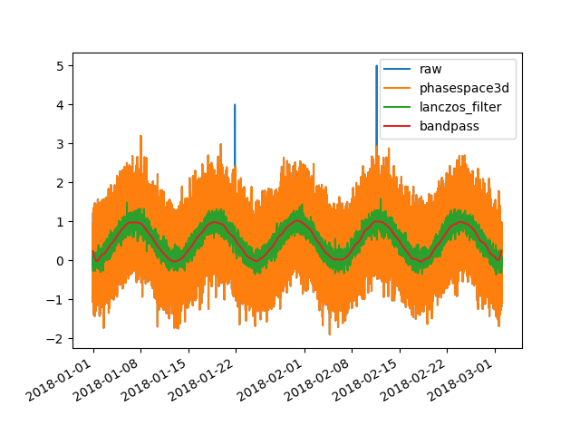

Note
Click here to download the full example code
Filters examples¶
Out:
Warning in dyadlength: n != 2^J
import pandas as pd
import toto
from toto.filters import despike_phasespace3d,lanczos_filter,bandpass_filter
import matplotlib.pyplot as plt
import numpy as np
# Create a panda timeseries of elevation
n = 86400
signal = np.random.normal(0, 0.5, n) \
+ np.sin(np.linspace(0, 5*np.pi, n))**2
signal[60000:60005]=5
signal[30000:30005]=4
timestamp= pd.date_range("2018-01-01", periods=n, freq="60s")
df = pd.DataFrame({'time':timestamp,'signal':signal}).set_index('time')
## Apply a despike_phasespace3d
df['phasespace3d']=despike_phasespace3d.despike_phasespace3d(
df['signal'].copy())
## Interpolate the gap
df['phasespace3d']=df['phasespace3d'].interpolate()
## Apply a lanczos_filter
df['lanczos_filter']=lanczos_filter.lanczos_filter(
df['phasespace3d'].copy(),\
args={'window':30,
'Type':'lanczos lowpas 1st order'})
## Apply a bandpass filter
df['bandpass']=bandpass_filter.bandpass_filter(
df['phasespace3d'].copy(),\
args={'lower cut-off (s)':3600*30,
'upper cut-off (s)':24*3600*30})
# Plot the results
fig, ax = plt.subplots(1)
ax.plot(df.index,df['signal'],label='raw')
ax.plot(df.index,df['phasespace3d'],label='phasespace3d')
ax.plot(df.index,df['lanczos_filter'],label='lanczos_filter')
ax.plot(df.index,df['bandpass'],label='bandpass')
ax.legend()
#ax.set_xlim(df.index[1000],df.index[2000])
fig.autofmt_xdate()
plt.show()
Total running time of the script: ( 0 minutes 3.521 seconds)